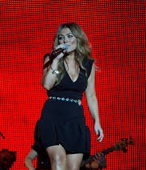
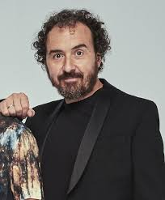
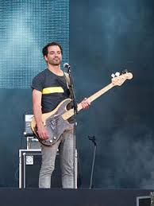
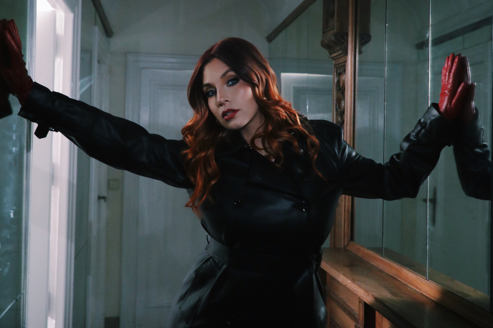

Amaia Montero
Amaia Montero, nacida el 26 de agosto de 1976 en Irún, España, es una cantante y compositora conocida por haber sido la voz principal de La Oreja de Van Gogh desde 1996 hasta 2007. Con el grupo alcanzó gran éxito internacional gracias a canciones como La playa y Rosas. Tras su salida, inició una carrera en solitario con discos como Amaia Montero (2008) y Si Dios quiere yo también (2014), consolidándose como una de las voces más reconocibles del pop español.
Xabi San Martín
Xabier San Martín, conocido como Xabi San Martín, es el teclista y uno de los principales compositores de La Oreja de Van Gogh. Nacido en San Sebastián, España, ha sido fundamental en la creación del sonido característico de la banda, contribuyendo con su talento en la composición de muchas de sus canciones más populares. Además de su papel en el grupo, Xabi ha trabajado en proyectos paralelos y colaboraciones con otros artistas.
Pablo Benegas
Pablo Benegas es el guitarrista de La Oreja de Van Gogh, conocido por su estilo distintivo y su contribución al sonido único de la banda. Nacido en Madrid, España, Pablo ha sido una pieza clave en la composición y producción de muchos de los éxitos del grupo. Su habilidad con la guitarra y su creatividad musical han ayudado a definir la identidad sonora de La Oreja de Van Gogh a lo largo de los años.
Álvaro Fuentes
Álvaro Fuentes es el bajista de La Oreja de Van Gogh, aportando una base rítmica sólida y melodías memorables que complementan el sonido de la banda. Nacido en España, Álvaro se unió al grupo en sus primeros años y ha sido una parte integral de su éxito continuo. Su estilo de tocar el bajo y su contribución a la composición han sido fundamentales para el desarrollo musical de La Oreja de Van Gogh.
Haritz Garde
Haritz Garde es el baterista de La Oreja de Van Gogh, conocido por su energía y precisión en la percusión que impulsa el ritmo de la banda. Nacido en España, Haritz se unió al grupo en sus primeros años y ha sido una parte esencial de su sonido característico. Su habilidad para crear patrones rítmicos dinámicos y su presencia en el escenario han contribuido significativamente al éxito y la popularidad de La Oreja de Van Gogh.
Leire Martínez
Leire Martínez es la vocalista principal de La Oreja de Van Gogh desde 2008, cuando reemplazó a Amaia Montero. Nacida en Pamplona, España, Leire se unió a la banda tras ganar el concurso de talentos musical Factor X. Su voz distintiva y su carisma han revitalizado el sonido del grupo, contribuyendo a su éxito continuo con álbumes como A las cinco en el Astoria (2008) y El planeta imaginario (2016). Leire ha demostrado ser una cantante versátil y una presencia fuerte en el escenario.